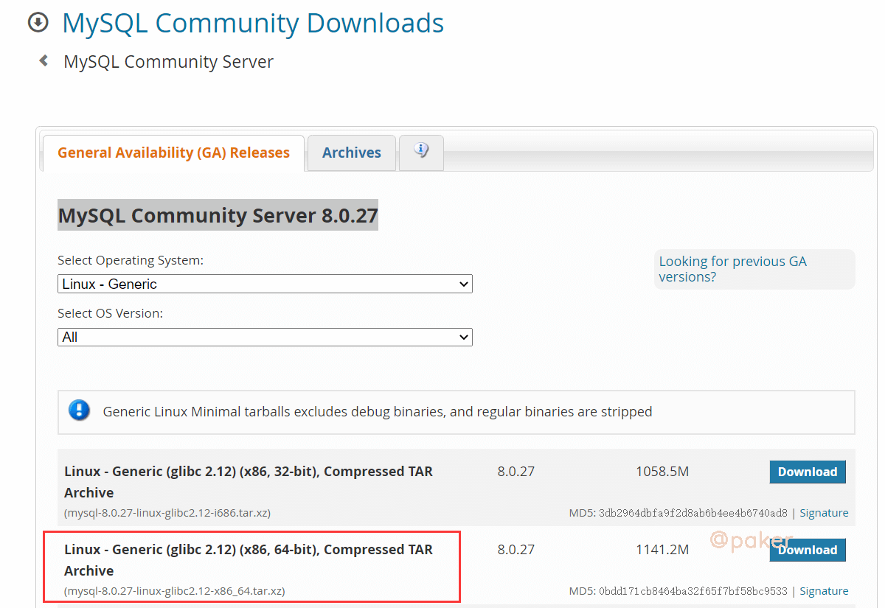
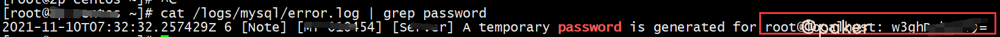

Centos安装最新Mysql8
Centos7安装最新版本mysql，目前官网版本为MySQL Community Server 8.0.27
1.安装包下载&解压
访问官网地址：https://dev.mysql.com/downloads/mysql/
如下图勾选

linux下执行下载命令
wget https://dev.mysql.com/get/Downloads/MySQL-8.0/mysql-8.0.27-linux-glibc2.12-x86_64.tar.xz
解压
解压
xz -d mysql-8.0.27-linux-glibc2.12-x86_64.tar.xz
tar xvf mysql-8.0.27-linux-glibc2.12-x86_64.tar
将解压后的文件移动到指定位置
mv mysql-8.0.27-linux-glibc2.12-x86_64 /usr/local/mysql
2.创建软链接&添加服务
创建软连接
ln -s /usr/local/mysql/bin/mysql /usr/bin/mysql
ln -s /usr/local/mysql/bin/mysqldump /usr/bin/mysqldump
添加服务
cp -a /usr/local/mysql/support-files/mysql.server /etc/init.d/mysql
3.添加用户组和用户
groupadd mysql
useradd -r -g mysql mysql
4.创建数据、日志、备份文件夹、修改权限
mkdir -p /data/mysql /logs/mysql /bak/mysql
chown -R mysql:mysql /usr/local/mysql/
chown -R mysql:mysql /data/mysql/
chown -R mysql:mysql /logs/mysql/
chmod -R 777 /usr/local/mysql/
chmod -R 777 /data/mysql/
chmod -R 777 /logs/mysql/
5.编辑配置文件
默认配置文件位置，/etc/my.cnf
vim /etc/my.cnf
写入如下配置
[mysqld]
basedir=/usr/local/mysql
datadir=/data/mysql
socket=/data/mysql/mysql.sock
log-error=/logs/mysql/error.log
port=3306
user=mysql
server-id=3306
symbolic-links=0
character-set-server=utf8mb4
lower_case_table_names = 1
collation-server=utf8mb4_general_ci
default-time-zone='+8:00'
max_connections=1000
max_connect_errors=10000
tmp_table_size=256M
max_heap_table_size=256M
log-bin=/data/mysql/mysql-bin
expire_logs_days=7
tmpdir=/tmp
# Disabling symbolic-links is recommended to prevent assorted security risks
# Settings user and group are ignored when systemd is used.
# If you need to run mysqld under a different user or group,
# customize your systemd unit file for mariadb according to the
# instructions in http://fedoraproject.org/wiki/Systemd
[mysqld_safe]
pid_file=/data/mysqld/mysqld.pid
log_error=/logs/mysql/error.log
#
# include all files from the config directory
#
[client]
socket=/data/mysql/mysql.sock
default-character-set=utf8mb4
6.初始化数据库
因为缺少组件报的错
error while loading shared libraries: libnuma.so.1: cannot open shared object file: No such file or directory
解决办法
yum -y install numactl.x86_64
初始化
cd /usr/local/mysql/
./bin/mysqld --defaults-file=/etc/my.cnf --initialize
启动服务
service mysql start
查看临时密码，保存好，很重要
cat /logs/mysql/error.log | grep password

7.本地登录，修改密码
登录，需要输入上一步保存的临时密码
mysql -uroot -p
修改root密码，并限制只能本地访问
ALTER USER 'root'@'localhost' IDENTIFIED BY 'ttttttttttttttttt';
8.添加账号并授权,允许远程(Navicat连接等)
CREATE USER 'ttttt'@'%' IDENTIFIED BY 'tttttttttttttt';
GRANT ALL PRIVILEGES ON . TO 'ttttt'@'%' WITH GRANT OPTION;
FLUSH PRIVILEGES;